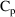
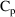
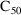
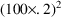
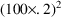
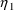
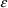
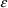
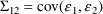

NONMEM Users Guide Part V - Introductory Guide - Chapter 12
1. What This Chapter is About
2. Advanced Features of PREDPP
2.1. Pharmacodynamic Modeling Using the $ERROR Record
2.2. Other Pharmacokinetic Models: ADVAN5-9,ADVAN13-18
2.3. Zero-Order Bolus Doses
2.4. The Additional Dose Data Item: ADDL
2.5. Lagged doses: the ALAG Parameter
2.6. Model Event Times: MTIME
2.7. Controlling Calls to PK and ERROR
2.8. Output-Type Compartments
2.9. Transgeneration of Input Data: the INFNSubroutine
3. User-written PRED Subroutines
3.1. Required Data Items
3.2. An Example of $PRED Statements: PharmacodynamicModeling
4. Advanced Features of NONMEM
4.1. Full Covariance Matrices: $OMEGA BLOCK and $SIGMABLOCK
4.1.1. More About $OMEGA and $SIGMA
4.2. Grouping Related Observations: The L1 and L2 DataItems
4.3. Continuing a NONMEM Run: MSFO and MSFI
4.4. NONMEM Can Obtain Initial Estimates for , ,
4.5. Improving Parameter Estimates: REPEAT and RESCALE
4.6. The Covariance Step: , , SpecialComputation
4.6.1. More About $COVARIANCE
4.7. Multiple Problems in a Single NONMEM Run
4.8. Simulation Using NONMEM: The $SIMULATION Record
4.8.1. More About $SIMULATION
4.9. Files for Subsequent Processing: the $TABLERecord
4.9.1. More about $TABLE and $SCATTER
4.10. Data Checkout Mode
4.11. Obtaining Individual Parameter Estimates -Conditional Estimates of s
4.12. Population Conditional Estimation Methods
4.13. Displaying PRED-Defined Variables andConditional Estimates of s
4.14. Mixture Models
4.15. PRED Error Return Codes and Error Messages inFile PRDERR
4.16. User-Written Subroutines
4.17. PRIOR
5. Observations of Two Different Types
6. Supplemental List of Features through NONMEM 7.5
6.1. NONMEM Features
6.2. Miscellaneous Features
6.3. Changes to NONMEM Outputs
6.4. PREDPP
6.5. NM-TRAN
6.5.1. General Features
6.5.2. Data Preprocessor
6.5.3. Abbreviated Code
6.5.4. Reserved Variables in Abbreviated Code
6.6. Utility Routines
6.7. All Options for $ESTIMATION
6.8. All Options for $COVARIANCE
NONMEM Users Guide Part V - Introductory Guide - Chapter 12
Chapter 12 -
Brief Descriptions of Other Features
1. What This Chapter is About
This chapter briefly
describes a variety of features of PREDPP and NONMEM that
are somewhat advanced for this text but are of interest to
most users of NONMEM. References are given to other
documents where additional information can be found. Section
2 is concerned with PREDPP, Section 3 is concerned with
user-written PREDs, and Section 4 describes general NONMEM
features. Section 5 contains an example that includes
several of the advanced features. Descriptions of NM-TRAN
control records in Section 4 have been augmented with
sections headed "More about ...". These contain
additional details, plus new options for NONMEM 7.3. Section
6 is new for NONMEM 7.3. It contains a supplemental list of
features through NONMEM 7.4, including features from
previous releases that are not otherwise discussed in this
guide.
Note that wherever $PK,
$ERROR, $DES, $AES, $MODEL, $MIX, $INFN, $TOL and $PRED
statements are referred to below, user-written subroutines
PK, ERROR, DES, AES, MODEL, MIX, INFN, TOL and PRED can be
used instead.
2. Advanced Features of PREDPP
2.1. Pharmacodynamic Modeling Using the $ERROR Record
$ERROR statements may
modify the value of F, the scaled drug concentration. They
may also introduce new
 and
and
 variables. This allows pharmacodynamic modeling to be
performed using PREDPP. Such models occur when a study
involves measurement of a drug effect, such as blood
pressure. A proposed model might relate the predicted effect
to a pharmacokinetic quantity such as plasma level. PREDPP
can be used to model

as is usual, and the predicted effect can be computed in the
$ERROR statements.
variables. This allows pharmacodynamic modeling to be
performed using PREDPP. Such models occur when a study
involves measurement of a drug effect, such as blood
pressure. A proposed model might relate the predicted effect
to a pharmacokinetic quantity such as plasma level. PREDPP
can be used to model

as is usual, and the predicted effect can be computed in the
$ERROR statements.
For example, suppose that
a modified version of the phenobarbital data of Chapter 2
includes observations of some drug effect (in this case,
perhaps a measure of the degree of sedation) but none of the
concentration observations. The dose event records are the
same as those of the earlier example. Suppose that the drug
concentrations from each individual have been used to
estimate that individual’s K and V parameters, and
that these estimates are now included on every event record
for the individual. Finally, suppose that the proposed
structural model for the effect, E, is an "E-max"
model:
where here
 is understood to mean the prediction of an
individual’s drug concentration in the plasma, and
and
are PD (pharmacodynamic parameters) modeled as
is understood to mean the prediction of an
individual’s drug concentration in the plasma, and
and
are PD (pharmacodynamic parameters) modeled as
To fit this data we can
use the control statements of figure 12.1. To obtain initial
parameter estimates, let us assume that the following is
observable in the data. The average value of all effect
measurements is about 50. Across individuals, the average
value of the largest effect measurement within each
individual’s data is about 100, and the average value
of the individual’s observed concentration at about
half this largest measurement is about 20. (This is seen
when concentration measurements and effect measurements are
examined together.) Let us also assume 20% random
interindividual variability in
and

and 4% intraindividual variability in the observation. From
this we obtain initial estimates of 100 and 20 for
 and
and
 ,

for
,
for
, and
for
,

for
,
for
, and
for
 .
.
This example is examined
again in in Section 3.2, which shows the use of $PRED
statements, and in Section 5, which shows how observed
concentrations and effects can be fit
simultaneously.
References: Users Guide
VI (PREDPP) IV.B.2
$PROBLEM PHARMACODYNAMIC MODEL USING $ERROR STATEMENTS
$INPUT ID TIME AMT INDK INDV DV
$DATA EFFDATA
$SUBROUTINE ADVAN1
$PK
K=INDK
V=INDV
S1=V
$ERROR
EMAX=THETA(1)+ETA(1)
C50=THETA(2)+ETA(2)
E=EMAX*F/(C50+F)
Y=E+ERR(1)
$THETA 100 20
$OMEGA 400 16
$SIGMA 4
$ESTIMATION
Figure 12.1. The
input to NONMEM-PREDPP for analysis of effect
observations.
2.2. Other Pharmacokinetic Models: ADVAN5-9,ADVAN13-18
Appendix 1 lists ADVAN
routines for the most commonly-used pharmacokinetic models.
Other ADVAN routines are:
ADVAN5 (General Linear)
ADVAN6 (General Nonlinear)
ADVAN7 (General Linear with Real Eigenvalues)
ADVAN8 (General Nonlinear Kinetics with Stiff Equations)
ADVAN9 (General Nonlinear Kinetics with Equilibrium
Compartments)
ADVAN13 (General Nonlinear Kinetics With Stiff/Nonstiff
Equations using LSODA)(nm71)
ADVAN14 (General Nonlinear Kinetics With Stiff/Nonstiff
Equations using CVODES)(nm74)
ADVAN15 (General Nonlinear Kinetics with Equilibrium
Compartments using IDAS)(nm74)
ADVAN16 (General Nonlinear Kinetics with Stiff/Nonstiff and
Delay Equations using RADAR5 (nm75)
ADVAN17 (General Nonlinear Kinetics with Equilibrium
Compartments using RADAR5)(nm75)
ADVAN18 (General Nonlinear Kinetics with Nonstiff and Delay
Equations using DDE_SOLVER (nm75)
With the general methods
the user defines a model of up to 999 compartments using
special options of the $MODEL record. For a linear model
(ADVAN5 and ADVAN7), it is sufficient to specify (directed)
compartmental connections and to compute their rate constant
parameters with $PK statements. ADVAN 5 and 7 make use of
numerical approximations to the matrix exponential. For a
nonlinear model (ADVAN6, ADVAN8, ADVAN9, ADVAN13, ADVAN14,
ADVAN15, ADVAN16, ADVAN17, ADVAN18), differential equations
must be supplied to govern the kinetics, via $DES
statements. It is possible to specify initial conditions for
the differential equations using the I_SS (Initial Steady
State) feature; Reserved variable ISSMOD may be
used.
For ADVAN9, ADVAN15 and
ADVAN17, algebraic equations may also be supplied via $AES
statements.
The use of the term
’nonlinear’ with ADVAN 6, 8, 9, 13, 14, 15, 16,
17, 18, only indicates that a system of any type of
first-order differential equations is allowed; such
equations could be linear or non-linear.
In all cases, the basic
features of PREDPP described in Chapter 7 are still
available, such as the ability to introduce doses of any
kind to any compartment of the model. It should be noted
that the general ADVAN routines are relatively slow. For
example, when a general method is used for a model identical
to that of an analytic method (ADVAN1 through ADVAN4 or
ADVAN10 through ADVAN12) the run time increases, usually by
an order of magnitude.
Some ADVAN and SS
routines must be told the number of accurate digits that are
required in the computation of drug amounts, i.e., the
relative tolerance. They may also be told the absolute
tolerance. With some ADVAN and SS, the tolerances may be
specified for each compartment. They may be specified by
$SUBROUTINES record options TOL, ATOL, SSTOL, SSATOL; by the
corresponding options of the $TOL record; or by user-written
subroutine TOL (which may also specify tolerances by NONMEM
Step). Option TOL (relative tolerance) may also be specified
on the $COVARIANCE record. Option ATOL (absolute tolerance)
may also be specified on $ESTIMATION and $COVARIANCE
records.
See Guide NONMEM 7,
"Controlling the Accuracy of the Gradient Evaluation
and Individual Objective Function
Evaluation"
With ADVAN9, ADVAN13,
ADVAN14, and ADVAN15, reserved variable MXSTEP may be used
to set the number of integration steps.
With $AES, $AESINIT
statements are also required. If there is no TIME data item,
$AESINIT may specify a calling protocol for the AES
subroutine. (See 2.7 below for a discussion of calling
protocols.)
Call ADVAN9 and ADVAN15
and AES with every event record (default)
Call ADVAN9 and ADVAN15
and AES once per individual record.
Equivalent calling
protocol phrases are:
(EVERY EVENT)
(ONCE PER IR)
References: Users Guide
VI (PREDPP) VI, VII
References: Users Guide IV (NM-TRAN) V.C.3, 4,
7-10
2.3. Zero-Order Bolus Doses
Instantaneous bolus
doses, which have AMT>0 and RATE=0, are described in
Chapter 6. Such doses appear instantaneously in the dose
compartment. Zero-order bolus doses are doses that enter the
dose compartment via a zero-order process (in the same
manner as do infusions) except that the rate or duration of
the process is computed with $PK statements. When the RATE
data item has the value -1, then the $PK statements must
include an assignment statement for an additional PK
parameter, Rn (the "modeled rate for compartment
n"), whose value gives the rate of entry of the drug
during the interval of time between the last event record
and the current one. There is a different such parameter for
every compartment receiving a zero-order bolus dose. When
the RATE data item has the value -2, then the $PK statements
must include an assignment statement for an additional PK
parameter, Dn (the "modeled duration for compartment
n"), whose value at the time of the dose event gives
the duration time of the dose. The rate and duration
parameters can be modeled like any other PK parameters; in
particular, the assignment statements can involve
 ’s which are to be estimated. These parameters can be
used to model the drug release rate or dissolution time of a
tablet or capsule.
’s which are to be estimated. These parameters can be
used to model the drug release rate or dissolution time of a
tablet or capsule.
Steady-state levels
involving zero-order bolus doses can be
computed.
Steady-state with
constant infusion was described in Chapter 6. Steady-state
infusions may also have modeled rates (i.e., the RATE data
item may be -1).
References: Users Guide
VI (PREDPP) III.F.3, F.4
2.4. The Additional Dose Data Item: ADDL
ADDL is a dose-related
data item that is used to request that a given number of
additional doses, just like the dose specified on the event
record, be added to the system at a regular time interval,
starting from the time on the event record. PREDPP itself
adds these doses at the appropriate future times; no actual
dose event record is generated by the Data Preprocessor or
by PREDPP. A positive integer value in ADDL specifies how
many additional doses (i.e., in addition to that already
specified in the event record) are to be given, and the
value in the II (interdose interval) data item (which is
required) specifies the time interval between
doses.
ADDL may be non-zero on a
steady-state dose event record (except for steady-state
infusions), in which case additional doses are given,
maintaining the dosing regimen into the future.
Non-steady-state kinetic formulas are used to advance the
system between each additional dose. Reserved variables
DOSTIM (the time of a lagged dose or additional dose to
which the system is being advanced) and DOSREC (the dose
record corresponding to the dose entering at DOSTIM) may be
used.
See also Section 2.6 below.
References: Users Guide
VI (PREDPP) V.K
2.5. Lagged doses: the ALAG Parameter
PREDPP permits an
additional PK parameter called an absorption lag time. One
such parameter can be defined for each compartment and
applies to all doses to that compartment. It gives the
amount of time that a dose is held as a "pending"
dose. When the absorption lag time has expired, the dose is
input into the system. In effect, the value of the
absorption lag time parameter is added to the value of the
TIME data item on the dose event record. With NM-TRAN,
recognized names for absorption lag time parameters have the
form ALAGn, where n is the compartment number. Reserved
variables DOSTIM (the time of a lagged dose or additional
dose to which the system is being advanced) and DOSREC (the
dose record corresponding to the dose entering at DOSTIM)
may be used.
See also Section 2.6 below.
See Guide VI, Chapter V,
Note 3 for the effect of ALAGn with Steady-State
doses.
References: Users Guide
VI (PREDPP) III.F.6
References: Users Guide IV (NM-TRAN) V.C.5
2.6. Model Event Times: MTIME
Model event times
MTIME(i) are additional PK parameters defined in the PK
routine or $PK block. A model event time is not associated
with any compartment, but, like an absorption lag time,
defines a time to which the system is advanced. When the
time is reached, indicator variables are set and a call to
PK is made. At this call (and/or subsequent to this call) PK
or DES or AES or ERROR can use the indicator variables to
change some aspect of the system, e.g., a term in a
differential equation, or the rate of an infusion. Reserved
variables MNEXT, MPAST, MNOW, MTDIFF may be
used.
MTIME does not apply to
Steady-State doses. See Guide VI, Chapter V, Note
4.
2.7. Controlling Calls to PK and ERROR
In order to evaluate the
$PK and $ERROR statements, PREDPP calls the PK and ERROR
subroutines. By default, the subroutines are called with
every event record. PREDPP may be instructed to limit calls
to certain event records in order to save the computing time
involved with unnecessary calls (e.g. when the PK parameters
do not vary from event record to event record within an
individual). It is also possible to cause the PK subroutine
to be called at times which do not correspond to any actual
event record.
Using NM-TRAN, calls to
PK are controlled by the presence of one of the following
pseudo-statements, at the start of the $PK
block:
call with every event
record, at additional and lagged dose times, and at modeled
event times.
call with every event
record (default).
call with the first event
record of each individual record and with new values of
TIME.
call once per individual
record.
A calling protocol phrase may be used
instead of a pseudo-statement. A calling protocol phrase may
use upper- or lower-case characters. It must be enclosed in
parentheses. NM-TRAN can understand minor variations in the
wording. E.g., the word "CALL" and prepositions
such as WITH can be omitted. Here are calling protocol
phrases equivalent to the above four pseudo-statements,
respectively.
(CALL WITH NON-EVENT TIMES)
(CALL WITH EVERY EVENT RECORD)
(CALL WITH FIRST EVENT RECORD AND NEW TIME)
(CALL ONCE PER INDIVIDUAL RECORD)
The choice CALLFL=-2 (CALL WITH NON-EVENT
TIMES) is intended to be used when PK parameters Dn
and/or Fn apply to additional or lagged doses and the
model for these parameters depends on some time-varying
concomitant variable such as type of drug preparation or
patient weight. By default, the values of the PK parameters
which apply to the dose are those values computed by PK with
the first event record having a value of TIME greater than
the time at which the dose actually enters the system (the
additional or lagged dose time). However, if PREDPP is
instructed to also call PK at the additional or lagged dose
time, then the values of the PK parameters are those values
computed at these special calls. At such calls, PK has
available to it information from the initiating dose event
record itself, and information from the two event records
whose TIME values bracket the additional or lagged dose
time. Along with CALLFL=-2 in the $PK block, the
NM-TRAN $BIND record may be useful; see Users Guide IV.
Using NM-TRAN, calls to ERROR are controlled by the presence
of one of the following pseudo-statements at the start of
the $ERROR block:
|
CALLFL=-1: |
|
call with every event record
(default). |
|
|
CALLFL=0: |
|
call with observation events only. |
|
|
CALLFL=1: |
|
call once per individual record. |
|
A calling protocol phrase may be used instead of
a pseudo-statement. As in the $PK block, the calling
protocol phrase may use upper- or lower-case characters and
must be enclosed in parentheses.
Here are calling protocol phrases equivalent to the above
three pseudo-statements, respectively.
(CALL WITH EVERY EVENT RECORD)
(CALL WITH OBSERVATION EVENTS)
(CALL ONCE PER INDIVIDUAL RECORD)
NM-TRAN automatically instructs PREDPP to limit
calls to ERROR to once per problem for the simple
error models discussed in Chapter 8, Sections 3.1 and 3.2:
Y=F+ERR(1)
Y=F+F*ERR(1)
Y=F*(1+ERR(1))
Y=F*EXP(ERR(1))
During the Simulation Step, PREDPP ignores any limitation
and calls the ERROR subroutine with every event record.
Even when calls to PK and/or ERROR are limited, the CALL
input data item can be used to force additional calls for
specific event records as needed.
References: Users Guide VI (PREDPP) III.B.2, III.H, IV.C,
V.J
References: Users Guide IV (NM-TRAN) V.C.5, C.6
2.8. Output-Type Compartments
With all versions of
PREDPP output-type compartments may be defined using
the $MODEL record. Suppose there is a compartment named
METABURI (for metabolite in urine). If it is to be an
output-type compartment, it must defined as follows:
$MODEL COMP=(METABURI,NODOSE,INITIALOFF)
The compartment is initally off, may be turned on and off,
and may not receive a dose. Just as with the default output
compartment, CMT may be negative on an observation record,
allowing the observation to be obtained, and then the
compartment turned off, with a single record. There may be
more than one such compartment, in addition to the default
output compartment. An output-type compartment must be
turned on with an other-type event record in order to start
accumulating drug. An output-type is not computed by
mass-balance, but must instead be computed explictly by the
ADVAN routine, e.g., using a differential equation when a
general non-linear model is used.
For an example, see Chapter 6, Section 9.
ID TIME EVID UVOL DV CMT AMT
1 9.50 0 75 .058 -3 0
With ADVAN2, compartment
3 is the default compartment for output, and the observation
at TIME 9.50 may have CMT=-3. But suppose a general linear
or non-linear model is used (ADVAN5,6,7,8,9,13) and there
are more than 3 user-defined compartments.
If the $MODEL statement describes the 3d. compartment as
simply
$MODEL COMP=NAME
then the default compartment attributes apply (initial on,
off/on allowed, dose allowed) and the compartment is not an
output-type compartment. PREDPP produces this error message
for data record 3:
SPECIFIED COMPARTMENT MAY NOT BE TURNED OFF WITH AN
OBSERVATION RECORD
There are two ways to avoid this error message. First, it is
always possible (for any compartment that may be turned off,
even the output compartment) to use two records instead of
one, e.g., first the observation, then a record with EVID=2
that turns off the compartment:
1 9.50 0 75 .058 3 0
1 9.50 2 0 0 -3 0
Alternately, it is possible to leave the data
as-is, and change the $MODEL statement so that compartment 3
is an output-type compartment.
2.9. Transgeneration of Input Data: the INFNSubroutine
NONMEM may be used to
modify the data records before any computations are
performed and also after all computations have been
performed. This is referred to as transgeneration of
the data. Transgeneration at the beginning of a problem can
be used, for example, to change weight-normalized doses to
unnormalized doses. PREDPP allows the user to supply a
subroutine called INFN or a $INFN block of abbreviated code
("initialization/finalization") in which
transgeneration can be performed. (The PREDPP library
includes a default INFN subroutine which does nothing.)
The NONMEM PASS subroutine is used for transgeneration.
$INFN and $PRED code may use the following statements to
process each record of the data set. ICALL values may be 0,
1 or 3, for run initializaton, problem initialization, and
problem finalization, respectively.
IF (ICALL == 3) THEN
DOWHILE(DATA)
...
ENDDO
ENDDO
Reserved variable PASSRC may be of interest.
References: Users Guide VI (PREDPP) VI.A
3. User-written PRED Subroutines
It is not necessary to
use PREDPP with NONMEM. Either $PRED statements or a
user-written PRED subroutine may be used in place of PREDPP
to supply NONMEM with predicted values for the DV data item
according to some (not necessarily pharmacokinetic) model.
An example using $PRED statements is given here. A special
caveat applies to user-written PRED subroutines that are
recursive: see 4.6 below.
References: Users Guide I (Basic) C.2
3.1. Required Data Items
The only required data
items when PREDPP is not used are the NONMEM data items DV,
MDV, and ID. When PREDPP is used, the Data Preprocessor is
able to recognize which records contain observed values and
which do not, and it supplies the MDV data item if it is not
already present in the data file. When PREDPP is not used,
the Data Preprocessor cannot do this. The input data file
must already contain the MDV data item if it is needed,
i.e., if the DV item of some data record does not contain a
value of an actual observation.
If $PRED statements are used, they must calculate a variable
called Y, using input data items and NONMEM’s
 ,
,
 , and (for population models)
, and (for population models)
 vectors in the calculation.
vectors in the calculation.
References: Users Guide I (Basic) B.1
References: Users Guide IV (NM-TRAN) III.B.8
3.2. An Example of $PRED Statements: PharmacodynamicModeling
The syntax of $PRED
statements is essentially the same as discussed for $PK and
$ERROR statements. $PRED statements can be used for simple
pharmacokinetic and pharmacodynamic models. In figure 12.1
above an example was given of pharmacodynamic modeling using
$ERROR statements. Suppose that in that example, drug
concentration is always measured at the same time as drug
effect. Suppose too, that rather than input the
individuals’ values of K and V and use them to compute
a predicted drug concentration for the individual, the
observed drug concentration itself is used in the Emax
model. This means that the the observed concentrations are
again incorporated into the data, but now as values of an
independent variable, rather than as the DV data item. This
also means that a pharmacokinetic model is not needed, and
therefore, PREDPP is not needed either. Figure 12.2 shows
the control stream for this new example.
$PROBLEM A SIMPLE PHARMACODYNAMIC MODEL
$INPUT ID TIME CP DV
$DATA EFFDATA
$PRED
EMAX=THETA(1)+ETA(1)
C50=THETA(2)+ETA(2)
E=EMAX*CP/(C50+CP)
Y=E+ERR(1)
$THETA 100 20
$OMEGA 400 16
$SIGMA 4
$ESTIMATION
Figure 12.2. The
input to NONMEM including $PRED statements for analysis of
effect data.
4. Advanced Features of NONMEM
4.1. Full Covariance Matrices: $OMEGA BLOCK and $SIGMABLOCK
In the examples of
Chapter 2 and 9, there appeared statements such as:
$OMEGA .0000055, .04
This is an example of the specification of initial parameter
estimates for a variance-covariance
 matrix which is constrained to be diagonal. Initial
estimates are given for the variances of
matrix which is constrained to be diagonal. Initial
estimates are given for the variances of
 and of
and of
 . The covariance between
. The covariance between
 and
and
 is constrained to be 0, i.e.,
. Another way of writing this statement is:
is constrained to be 0, i.e.,
. Another way of writing this statement is:
$OMEGA DIAGONAL(2) .0000055, .04
The option DIAGONAL(2) states explicitly that the
block contains two
 s and that it has diagonal form.
s and that it has diagonal form.
If the data supports the possibility that

and
 covary with each other, it may be useful to model
covary with each other, it may be useful to model
 as being unconstrained and allow NONMEM to estimate the
covariance. A special form of the $OMEGA record is used, in
which initial values are supplied for both variances and the
covariance. For example:
as being unconstrained and allow NONMEM to estimate the
covariance. A special form of the $OMEGA record is used, in
which initial values are supplied for both variances and the
covariance. For example:
$OMEGA BLOCK(2) .0000055, .0000001, .04
The option BLOCK(2) states that there are two
 variables in the block, and that covariance is to be
estimated. The new element is
.
variables in the block, and that covariance is to be
estimated. The new element is
.
$OMEGA BLOCK is used for both population and individual
studies, i.e., it is the same whether
 is used in the first case in a model for residual error or
is used in the second case in a model for random
interindividual error. In a population study, if there is
more than one
is used in the first case in a model for residual error or
is used in the second case in a model for random
interindividual error. In a population study, if there is
more than one
 variable, and the model allows these variables to covary,
then $SIGMA BLOCK is used in a similar manner.
variable, and the model allows these variables to covary,
then $SIGMA BLOCK is used in a similar manner.
The initial estimates of even more complicated
 and
and
 matrices may be given using multiple $OMEGA and $SIGMA
records. For example, the initial estimates of a mixture of
correlated and uncorrelated random variables may given.
Also, in this context (as with the simple form of the $OMEGA
and $SIGMA records described in Chapter 9, Section 3)
variances-covariances may be constrained to fixed values by
means of the FIXED option. Finally, some
variances-covariances may be constrained to equal others by
means of the BLOCK SAME option.
matrices may be given using multiple $OMEGA and $SIGMA
records. For example, the initial estimates of a mixture of
correlated and uncorrelated random variables may given.
Also, in this context (as with the simple form of the $OMEGA
and $SIGMA records described in Chapter 9, Section 3)
variances-covariances may be constrained to fixed values by
means of the FIXED option. Finally, some
variances-covariances may be constrained to equal others by
means of the BLOCK SAME option.
The ability to fix all variances-covariances in both
 and
and
 allows Bayesian estimates to be obtained of the
pharmacokinetic parameters of a single individual, based on
the individual’s data and a prior population
distribution for the parameters.
allows Bayesian estimates to be obtained of the
pharmacokinetic parameters of a single individual, based on
the individual’s data and a prior population
distribution for the parameters.
References: Users Guide IV (NM-TRAN) III.B.10
4.1.1. More About $OMEGA and $SIGMA
Initial estimates of a
block of $OMEGA or $SIGMA must be positive definite unless
the entire block is fixed to 0.
If initial estimates of a block of $OMEGA or $SIGMA is not
positive definite because of rounding errors, a value will
be added to the diagonal elements to make it positive
definite. A message in the NONMEM report file will indicate
if this was done. (nm73).
Additional options include:
VARIANCE (initial estimates of diagonal elements are
variances (default))
STANDARD or SD (initial estimates of diagonal
elements are standard deviations)
COVARIANCE (initial elements of off-diagonal elements
are covariances (default))
CORRELATION (initial elements of off-diagonal elements
are correlation)
CHOLESKY (the block is specified in its Cholesky form)
NONMEM converts all initial estimates to variance and
covariances. The values desplayed in the NONMEM report and
in the raw and additional output files are always variances
and covariances.
If the initial estimate of $OMEGA or $SIGMA has
band-symmetric form, NONMEM will be constrained to retain
this form (nm7).
Special value of $OMEGA elements for unconstrained etas: If
all diagonal elements of $OMEGA are "1.0E+06
FIXED" this indicates that, in a multi-subject data
set, each subject’s data is to be analyzed as
individual data. This is described by NONMEM as
ANALYSIS TYPE: POPULATION WITH UNCONSTRAINED ETAS(nm73)
Short-cuts may be used for entering repeated
information.
A count m may be
included. With $OMEGA BLOCK(n) SAME(m)
the $OMEGA BLOCK(n) SAME record is
repeated m times. Similarly for $SIGMA records
(nm73).
|
$THETA, $OMEGA, $SIGMA Repeated
values |
|
When specifying initial
estimates, a repeated value can be coded using notation
(...)xn. E.g., $OMEGA (2)x4 can be used in place of $OMEGA 2
2 2 2. Simliarly for $SIGMA and $THETA.
|
$OMEGA,$SIGMA VALUES option |
|
If initial estimates of
all diagonal elements of $OMEGA or $SIGMA are the same, and
initial estimates of all off-diagonal elements are the same,
they can be specified simply as $OMEGA
BLOCK(n)VALUES(diag,odiag).
Informative record names for $OMEGA and
$SIGMA may be used to make it easier place the
records in the control stream.
$OMEGAP specifies omega priors
$OMEGAPD specifies degrees of freedom (or dispersion
factor) for omega priors
They are identical to $OMEGA records, but
understood to specify prior information for NWPRI. They may
be placed anywhere in the control stream, whereas the same
records without "P" or "PD" would have
to be in a specific location.
Informative record names $SIGMAP and
$SIGMAPD may be used similarly.
4.2. Grouping Related Observations: The L1 and L2 DataItems
The $ERROR statements for
a problem may sometimes involve more than one random
variable. For example, there may be two types of
observations. One type may be an observation from one
compartment of a PK system, or with one assay or
preparation, and another type may be an observation from a
different compartment or with a different assay or
preparation. The model for the two types of observations
would typically involve at least two
 variables (e.g. (3.8)). If all observations are made at
sufficiently separated times, there may be little reason to
be concerned about correlation between the two random
errors. However, if the two types of observations are taken
at the same or very close to the same time, it is possible
that correlation will exist; whatever circumstance has
influenced one observation to be different from the
predicted level may also have some influence on the other
observation. In this case a covariance between the two
variables should be allowed, as described above in Section
4.1. Then the two types of observations at the same time
point are regarded as two elements of a multivariate
observation.
variables (e.g. (3.8)). If all observations are made at
sufficiently separated times, there may be little reason to
be concerned about correlation between the two random
errors. However, if the two types of observations are taken
at the same or very close to the same time, it is possible
that correlation will exist; whatever circumstance has
influenced one observation to be different from the
predicted level may also have some influence on the other
observation. In this case a covariance between the two
variables should be allowed, as described above in Section
4.1. Then the two types of observations at the same time
point are regarded as two elements of a multivariate
observation.
In the case of population data, there exists a NONMEM data
item, L2, which is used to identify the elements of a
multivariate observation. In effect, L2 acts in a similar
way as ID, but grouping observations within
individual records.
In the case of individual data, the ID data item already
serves this purpose: it forms groups of observations whose
 variables may be correlated. Thus, in the input data file,
the ID data item should be the same for those observations
which may have correlated
variables may be correlated. Thus, in the input data file,
the ID data item should be the same for those observations
which may have correlated
 s. However, for individual data, the Data Preprocessor
normally replaces the ID data item with a new set of values
which describe every observation as being independent of the
others. To prevent the Data Preprocessor from doing this, L1
should be included in the $INPUT record as the name or
synonym for the user-supplied ID data item.
s. However, for individual data, the Data Preprocessor
normally replaces the ID data item with a new set of values
which describe every observation as being independent of the
others. To prevent the Data Preprocessor from doing this, L1
should be included in the $INPUT record as the name or
synonym for the user-supplied ID data item.
Auto-correlation: The values of epsilons used in the
intraindividual model may be correlated across the
observations contained in the L2 record. Auto-correlation
may be part of both Simulation and Estimation. The CORRL2
reserved variable may be used.
References: Users Guide IV (NM-TRAN) II.C.4, III.B.2
References: Users Guide II (Supplemental) D.3
4.3. Continuing a NONMEM Run: MSFO and MSFI
The MSFO (Model
Specification Output File) option of the $ESTIMATION record
instructs NONMEM to write a Model Specification File
(MSF). It is created when NONMEM writes the first
iteration summary to the intermediate output file, and is
re-written when every subsequent iteration summary is
written. This file can then be read in a subsequent NONMEM
run using a $MSFI (Model Specification File Input) record.
This file has much of the information about the model used
in the previous run, thus the name "Model Specification
File". It also contains all the information that allows
the Estimation Step from the previous run (which may have
terminated, for example, due to the number of function
evaluations exceeding its limit or a computer crash or some
other externally-caused interruption of the NONMEM run) to
be continued in the subsequent run. There are a number of
benefits to using a MSF. First, what might be a long
Estimation Step (due to a very lengthy search) can be split
over a series of runs, each with a limited number of
function evaluations. Any run which terminates prematurely
due to computer failure can be restarted from the MSF output
in the previous run. (This provides a
"checkpoint/restart" capability.) The progress
made in the Estimation Step can also be evaluated between
runs, and a decision made as to whether it is worth
continuing a search which is consuming excessive amounts of
computer time. Second, the Covariance, Tables, and
Scatterplot Steps can be performed in later runs, each using
the MSF from the final run with the Estimation Step. It is
advisable to perform the Covariance Step only after
satisfactory results have been obtained from the Estimation
Step. Third, when NONMEM writes to the MSF, it also writes
iteration summaries to the intermediate printout file
(INTER). These iteration summaries are in the original
parameterization (nm72).
Options are described in Guide VIII. These include
NORESCALE, ONLYREAD , and NPOPETAS (nmvi). (NPOPETAS gives
information to NM-TRAN rather than NONMEM.) The VERSION
option allows NONMEM to read MSF files generated by previous
versions of NONMEM (nm74). The NOMSFTEST option tells NONMEM
to turn off strict MSFI error testing (nm74).
Option NEW allows analysis to continue, or to allow an
analysis on a new data set, resuming from the final
parameters of the MSF file. (nm74)
References: Users Guide I (Basic) C.4.4
References: Users Guide IV (NM-TRAN) III.B.6, B.12
References: Introduction to NONMEM 7
4.4. NONMEM Can Obtain Initial Estimates for , ,
NONMEM can be directed to
obtain initial estimates for one or more elements of
 ,
,
 , or
, or
 . This is done in a separate Initial Estimates Step. For an
element of
. This is done in a separate Initial Estimates Step. For an
element of
 , omit the initial estimate but include lower and upper
bounds, e.g., (1, ,50) in the $THETA record. (The
NUMBERPOINTS option may be used to control the number of
points in
, omit the initial estimate but include lower and upper
bounds, e.g., (1, ,50) in the $THETA record. (The
NUMBERPOINTS option may be used to control the number of
points in
 space examined by NONMEM during the search for initial
estimates of
space examined by NONMEM during the search for initial
estimates of
 .) For a block of
.) For a block of
 or
or
 , omit all initial estimates on the $OMEGA BLOCK (or
DIAGONAL) record, or $SIGMA BLOCK (or DIAGONAL) record,
respectively.
, omit all initial estimates on the $OMEGA BLOCK (or
DIAGONAL) record, or $SIGMA BLOCK (or DIAGONAL) record,
respectively.
Note that when $PK and $ERROR statements are present but the
$OMEGA and/or $SIGMA records are absent, NONMEM will be
directed to obtain initial estimates for the variances of
the random variables in question, assuming the diagonal form
of the matrix.
References: Users Guide IV (NM-TRAN) III.B.9-11
4.5. Improving Parameter Estimates: REPEAT and RESCALE
The Estimation Step can
be immediately repeated after the search has terminated
successfully, by including the REPEAT option on the
$ESTIMATION record. This can improve the accuracy of the
parameter estimates when one or more initial estimates are
wrong by a few orders of magnitude. The final estimates from
the first implementation of the Estimation Step are used as
the initial estimates of the second implementation, and thus
the scaling used with the STP is different from that with
the first implementation, allowing fewer leading zeros after
the decimal point in the STP. When the Estimation Step is
continued by means of a Model Specification File, similar
rescaling can be requested using the RESCALE option
of the $MSFI record.
References: Users Guide IV (NM-TRAN) III.B.12, B.14
References: Users Guide II (Supplemental) F
4.6. The Covariance Step: , , SpecialComputation
The Covariance Step,
which computes standard errors of the parameter estimates,
first computes a covariance matrix of the parameter
estimates. (This is not the same as the
 or
or
 matrix). It is possible to request that this covariance
matrix be computed in one of three different ways: either as
,
, or
(the default), where
and
are two matrices from statistical theory, the Hessian and
Cross-Product Gradient matrices, respectively. Options
MATRIX=R and MATRIX=S of the $COVARIANCE
record are used to request the
matrix). It is possible to request that this covariance
matrix be computed in one of three different ways: either as
,
, or
(the default), where
and
are two matrices from statistical theory, the Hessian and
Cross-Product Gradient matrices, respectively. Options
MATRIX=R and MATRIX=S of the $COVARIANCE
record are used to request the
 and
and
 matrices, respectively. The Covariance Step can produce
additional output. When the default covariance matrix is
used,
and/or
can be printed. This is requested by options
PRINT=R and/or PRINT=S. Eigenvalues are be
printed if requested by option PRINT=E. Multiple
PRINT options can be specified.
matrices, respectively. The Covariance Step can produce
additional output. When the default covariance matrix is
used,
and/or
can be printed. This is requested by options
PRINT=R and/or PRINT=S. Eigenvalues are be
printed if requested by option PRINT=E. Multiple
PRINT options can be specified.
A special computation is required when the data are
from a single individual and a recursive PRED is used. A
recursive PRED is one which stores the results of certain
computations using the values from one event record, and
uses these results in later computations with the values
from a later event record. PREDPP advances the kinetic
system from one time point to the next and therefore is an
example of a recursive PRED. When PREDPP is used and the
data is from a single individual, NM-TRAN automatically
requests the special computation. When a recursive
user-written PRED is used and the data are from a single
individual, the SPECIAL option of the $COVARIANCE
record must be used.
The CONDITIONAL option of the $COVARIANCE record
requests that the Covariance Step be implemented only if
Estimation Step terminates successfully, and is the default.
The UNCONDITIONAL option can be used to request
that it be implemented no matter how the Estimation Step
terminates.
References: Users Guide IV (NM-TRAN) III.B.15
References: Users Guide II (Supplemental) D.2.5
4.6.1. More About $COVARIANCE
Other options of
interest:
COMPRESS (affects how the Covariance matrices are
displayed in the NONMEM report)
NOSLOW|SLOW (SLOW Requests a slower method of
computation)
SIGL|SIGLO (affects how computations are done in the
Covariance Step)
RESUME (allows the Covariance Step to resume from a
MSF)
NOFCOV (turns of the Covariance Step for Estimation
steps using the classical methods)
The $ESTIMATION record option NOCOV may be used to turn off
the Covariance Step following a particular Estimation step,
and to turn it back on again.
See Section 6.8 for more about $COV.
4.7. Multiple Problems in a Single NONMEM Run
NONMEM can implement more
than one problem in a single run. That is, the input control
stream can contain more than one $PROBLEM record, each
followed by its own set of problem specification statements.
This feature can be useful in a variety of situations. A
series of what otherwise would be separate runs, each
analyzing a single individual’s data within a
population data file, can be performed conveniently without
building separate data files for each individual. Also, more
than one data set can be analyzed using the same model and
the same problem specification. Multiple problems are also
useful with NONMEM’s Simulation Step, described below.
Note that abbreviated code such as $PK and $ERROR statements
cannot appear after the first problem. If the $DATA record
is omitted or the filename is specified as * on a $DATA
record in a problem subsequent to the first, the previous
data set is re-used.
With multiple problems, the following NONMEM reserved
variables are of interest:
NPROB,IPROB
A sequence of problems may be defined to be a
superproblem by means of the NM-TRAN $SUPER record,
and NONMEM may also be directed to repeat them a specific
number of times.
With superproblems, the following NONMEM reserved variables
are of interest:
S1NUM S2NUM S1NIT S2NIT S1IT S2IT
SKIP_ variable for Superproblem termination
References: Users Guide IV (NM-TRAN) III.B.1
4.8. Simulation Using NONMEM: The $SIMULATION Record
The term
simulation refers to the generation of data points
according to some model. A simple form of simulation is
performed when the Estimation Step is omitted but the Table
Step is implemented. The PRED column of the table contains
predictions based on the information in the data records and
the initial estimates of
 , under the model specified in the PRED (PREDPP) subroutine.
Random variables
, under the model specified in the PRED (PREDPP) subroutine.
Random variables
 and
and
 (if any) have no effect on the predictions and may be
omitted. If the only purpose of the run is to obtain
simulated values, and these variables are present, it is
best (but not required) that their variances be fixed to 0.
NONMEM does not compute the objective function in this
circumstance, which has certain advantages.
(if any) have no effect on the predictions and may be
omitted. If the only purpose of the run is to obtain
simulated values, and these variables are present, it is
best (but not required) that their variances be fixed to 0.
NONMEM does not compute the objective function in this
circumstance, which has certain advantages.
NONMEM can also perform a Simulation Step, in which another
type of simulation is performed. In the Simulation Step,
each value of the DV data item of each record with MDV=0 is
replaced by a simulated observation generated from the
model, but including statistical variability†.
----------
† During the
Simulation Step, values of F computed by PRED or PREDPP for
records having MDV=1 are irrelevant and are ignored by
NONMEM.
----------
The PRED (PREDPP) routine
uses
 and
and
 values that are supplied by NONMEM according to
user-specified random distributions (e.g., with variances
given by the initial estimates of
values that are supplied by NONMEM according to
user-specified random distributions (e.g., with variances
given by the initial estimates of
 and
and
 ). If
). If
 and
and
 matrices are fixed to zero, for example, the simulated
values are the same as the predictions described above.
matrices are fixed to zero, for example, the simulated
values are the same as the predictions described above.
If the data are then displayed by the Table Step, the DV
column for records with MDV=0 contains the simulated
observations obtained from the Simulation Step. For records
having MDV=1, the DV column contains whatever was in the
original data record. The PRED column of the table contains
predictions as described above. If the Estimation Step was
not implemented, the values of
 used for these predictions are the initial values. If the
Estimation Step was implemented, the values of
used for these predictions are the initial values. If the
Estimation Step was implemented, the values of
 used for the predictions in the PRED column are the final
parameter estimates. Note that the observations that are fit
during the search are the simulated values obtained by the
Simulation Step.
used for the predictions in the PRED column are the final
parameter estimates. Note that the observations that are fit
during the search are the simulated values obtained by the
Simulation Step.
Often data are simulated using the Simulation Step, then
analyzed using one or more other steps (e.g. Estimation and
Covariance Steps), and this process is repeated a fixed
number of times, using the same model. The Simulation Step
accommodates this easily with the notion of a NONMEM
subproblem, whereby these steps are repeated within the
same NONMEM problem. However, on occasion it can be useful
to have multiple problems (see Section 4.7), where one
problem implements the Simulation Step, and the subsequent
problem implements other steps. For example, this is one way
to obtain different initial parameter estimates for the
Estimation Step than for the Simulation Step.
The ONLYSIMULATION option causes NONMEM to suppress
evaluation of the objective function. With this option,
PRED-defined variables displayed in tables and scatterplots
(see Section 4.13) are simulated values, i.e., use simulated
 s and initial
s and initial
 s, and weighted residual values in tables and scatterplots
are always 0.
s, and weighted residual values in tables and scatterplots
are always 0.
References: Users Guide IV (NM-TRAN) III.B.13
References: Users Guide VI (PREDPP) III.E.2, L.1 , IV.B.1-2,
C, G.1
4.8.1. More About $SIMULATION
With simulation,
subroutines SIMETA and SIMEPS are used.
With simulation and subproblems, the data set for each
subproblem after the first is the same data set used by the
previous subproblem, and includes any changes
(transgeneration) made by the previous subproblem. With
nm74, the REWIND option of $SIMULATION may be used to
request that the original data set be used for all
sub-problems. (If transgeneration is performed on the data
set by $INFN when ICALL=1, the resulting data set is
considered to be the original data set.)
See Section 6 for a discussion of the BOOTSTRAP and STRAT
(stratification) features of simulation, and also
parallelization during simulation.
The following NONMEM reserved variables are of interest
during simulation:
IREP, NREP
NONMEM subroutine RANDOM may be used in abbreviated code to
obtain numbers from a random source (nmiv, nm7).
The $SIMULATION record has other options, including:
a random seed and options NEW, NORMAL,
UNIFORM, or PARAMETRIC for each of several
random sources;
TRUE=INITIAL, TRUE=FINAL, or
TRUE=PRIOR, to specify what the "true
parameter values" for the Simulation should be;
PREDICTION or NOPREDICTION to specify whether
the Y (or F) variable or the DV variable is set to the
prediction;
REQUESTFIRST or REQUESTSECOND to specify if
any eta partials are to be computed.
NONMEM can use the BOOTSTRAP method for simulations. With
BOOTSTRAP, other options are possible:
REPLACE or NOREPLACE
STRAT or STRATF.
$SIM NOSUPRESET feature allows the simulation seeds not to
be reset with each iteration of a super-problem.
4.9. Files for Subsequent Processing: the $TABLERecord
NONMEM can write the data
for a table to an external formatted file, as requested by
the FILE option of the $TABLE record. Other computer
programs can read these files. Such programs can perform
further analysis or provide improved graphical displays.
These files normally contain header lines similar to those
in a printed table, but the header lines can be suppressed
entirely or in part by means of the NOHEADER,
ONEHEADER, ONEHEADERALL,
ONEHEADERPERFILE options. NOTITLE
(suppresses the table titles) and NOLABEL
(supresses column labels) may be used.
Tables may be written to the same or to different table
files.
References: Users Guide IV (NM-TRAN) III.B.16
4.9.1. More about $TABLE and $SCATTER
Some options may be used
only with a table file.
Options NOFORWARD and FORWARD control
whether a table file which is used with multiple problems is
positioned at the start of the file or forwarded to the end
of the file.
Option NOPRINT may be used suppress the table in
the NONMEM report, or PRINT to include it as
ususal. A printed table is limited to 8 items but a
non-printed table file may have an ulimited number of items
(controlled by PDT in $SIZES with default 500).
FORMAT supplies an alternate format for every numeric
item in a table file (the default is s1PE11.4). An alternate
name for this option is DELIM.
RFORMAT supplies an alternate format for the full
numeric record of a file.
LFORMAT supplies an alternate format for the full label
record in a file.
Other options can be used with both printed tables and table
files.
FIRSTONLY (include only the first data record from each
individual record)
LASTONLY (include only the last data record from each
individual record)
FIRSSTLASTONLY (include only the first and last data
record from each individual record)
BY (sort records in the table)
NOAPPEND (suppress items DV, PRED, RES, WRES)
APPEND (list items DV, PRED, RES, WRES; this is the
default)
With a $SCATTER record, additional options are:
FIRSTONLY (include only the first data record from each
individual record)
OBSONLY (include only the observation records, having
MDV=0)
The option ABS0 is similar to ORD0
described in Chapter 9, but adds a line zero line on the
abscissa axis of the scatterplots.
Many additional diagnostic and reserved variables may be
listed in tables and scatters; see 6.3 below.
With the Monte-Carlo generated diagnostics, new options of
the $TABLE record may be used. Note that if these options
affect the values of the weighted residual, the scatterplots
will also be affected.
ESAMPLE=n1
WRESCHOL
SEED=n2
RANMETHOD=[n|S|m]
4.10. Data Checkout Mode
NONMEM’s data
checkout mode is intended for preliminary display of data
without the use of a model. In data checkout mode, the PRED
routine is not called. Predictions, the objective function,
residuals, and weighted residuals are not computed. Only the
Table and Scatterplot Steps can be implemented in the
problem. With NM-TRAN, this mode is requested by coding the
option CHECKOUT on the $DATA record. A $SUBROUTINES
record and abbreviated code are required, but they have no
effect and need only be syntactically correct.
References: Users Guide IV (NM-TRAN) III.B.6
4.11. Obtaining Individual Parameter Estimates -Conditional Estimates of s
With population data,
NONMEM can obtain estimates of individual-specific true
values of
 from any given set of values of
from any given set of values of
 ,
,
 ,
, and the individual’s data. These are called
conditional estimates of
,
, and the individual’s data. These are called
conditional estimates of
 . When the conditional estimates are obtained after
estimation is carried out by the First-Order method, they
are referred to as "posthoc" estimates. With
NM-TRAN, they are requested by the option POSTHOC
on the $ESTIMATION record.
. When the conditional estimates are obtained after
estimation is carried out by the First-Order method, they
are referred to as "posthoc" estimates. With
NM-TRAN, they are requested by the option POSTHOC
on the $ESTIMATION record.
References: Users Guide IV (NM-TRAN) III.B.14
4.12. Population Conditional Estimation Methods
NONMEM can obtain
conditional estimates of
 variables as part of the computation of population parameter
estimates. These are called conditional estimation
methods. With NM-TRAN, such methods are requested by
including the option METHOD=CONDITIONAL (or
METHOD=1) on the $ESTIMATION record. (The option
METHOD=ZERO, or METHOD=0, requests the
conventional First-Order method and is the default.) There
are two conditional estimation methods. If NONMEM uses only
first-order approximations, this is the First-Order
Conditional Estimation Method. This has one variation,
interaction, which takes into account
variables as part of the computation of population parameter
estimates. These are called conditional estimation
methods. With NM-TRAN, such methods are requested by
including the option METHOD=CONDITIONAL (or
METHOD=1) on the $ESTIMATION record. (The option
METHOD=ZERO, or METHOD=0, requests the
conventional First-Order method and is the default.) There
are two conditional estimation methods. If NONMEM uses only
first-order approximations, this is the First-Order
Conditional Estimation Method. This has one variation,
interaction, which takes into account
 -

interaction and is requested by the additional option
INTERACTION on the $ESTIMATION record. If NONMEM
uses a certain second-order approximation, this is the
Laplacian method, which is requested by the
additional option LAPLACIAN on the $ESTIMATION
record. Interaction may be specified with any method,
including the Laplacian method.
-

interaction and is requested by the additional option
INTERACTION on the $ESTIMATION record. If NONMEM
uses a certain second-order approximation, this is the
Laplacian method, which is requested by the
additional option LAPLACIAN on the $ESTIMATION
record. Interaction may be specified with any method,
including the Laplacian method.
Note that this usage of the term CONDITIONAL is different
from the usage on the $SCATTERPLOT, $TABLE, and $COVARIANCE
records, in which it refers to the circumstances under which
the step in question is implemented.
Option CENTERING requests that the average
conditional estimates of each eta be constrained to be close
to 0.
References: Users Guide IV (NM-TRAN) III.B.14
4.13. Displaying PRED-Defined Variables andConditional Estimates of s
NONMEM can display
PRED-defined variables in table and scatterplots. With
NM-TRAN, any variable appearing on the left-hand side of an
assignment statement in abbreviated code can be displayed by
listing it in a $TABLE or $SCATTER record. If the data are
population, NONMEM can also display conditional estimates of
 . With NM-TRAN, variables ETA(1), ETA(2), etc., can be
simply listed in $TABLE and $SCATTER records. When
conditional estimation is not performed, the values
displayed are zero. Displayed values of PRED-defined random
variables will use conditional estimates of
. With NM-TRAN, variables ETA(1), ETA(2), etc., can be
simply listed in $TABLE and $SCATTER records. When
conditional estimation is not performed, the values
displayed are zero. Displayed values of PRED-defined random
variables will use conditional estimates of
 if they have been obtained, otherwise they will be typical
values. This feature is available with PREDPP, as well as
with user-written PRED routines. For example, the following
records could replace the $ESTIMATION record in Figure 12.2:
if they have been obtained, otherwise they will be typical
values. This feature is available with PREDPP, as well as
with user-written PRED routines. For example, the following
records could replace the $ESTIMATION record in Figure 12.2:
$ESTIMATION POSTHOC
$TABLE ETA(1) EMAX
The $ABBREVIATED record can be used to limit the number of
variables available for display when the number is
excessive.
References: Guide III (Installation) V.2.4
References: Guide IV (NM-TRAN) III.B.16-17
References: Guide VI (PREDPP) III.J, IV.E
4.14. Mixture Models
A mixture model is
a model that explicitly assumes that the population consists
of two or more sub-populations, each having its own model.
For example, with two sub-populations, one might assume that
some fraction p of the population has one set of typical
values of the PK parameters, and the remaining fraction 1-p
has another set of typical values. Both sets of typical
values and the mixing fraction p may be estimated. For each
individual, NONMEM also computes an estimate of the number
of the subpopulation of which the individual is a member.
The user must supply a FORTRAN subroutine called MIX or a
$MIX block of abbreviated code to compute the fractions p
and 1-p.
Reserved variables NSPOP, P, MIXNUM, MIXEST, MIXP and MIXPT
can be used in abbreviated code. Reserved variable TEMPLT
may be used.
References: Users Guide VI (PREDPP) III.L.2
4.15. PRED Error Return Codes and Error Messages inFile PRDERR
A PRED routine can return
a PRED error return code (1 or 2) to NONMEM,
indicating that it is unable to compute a prediction for a
given data record with the current values of
 ’s and
’s and
 ’s. For example, PREDPP returns error return code 1
when a basic or additional PK parameter has a value that is
physically impossible (e.g., a scale parameter which is zero
or negative). Error return codes can also be specified by
the user in user-written code or in abbreviated code using
the EXIT statement. One reason for doing this is to
constrain parameters in order to avoid floating point
machine interrupts. The PRED error recovery option
determines what action NONMEM will take. With NM-TRAN, the
PRED error recovery option is either ABORT (which
is the default) or NOABORT, and is specified on the
$ESTIMATION and $THETA records.
’s. For example, PREDPP returns error return code 1
when a basic or additional PK parameter has a value that is
physically impossible (e.g., a scale parameter which is zero
or negative). Error return codes can also be specified by
the user in user-written code or in abbreviated code using
the EXIT statement. One reason for doing this is to
constrain parameters in order to avoid floating point
machine interrupts. The PRED error recovery option
determines what action NONMEM will take. With NM-TRAN, the
PRED error recovery option is either ABORT (which
is the default) or NOABORT, and is specified on the
$ESTIMATION and $THETA records.
If an error return code is returned during the Simulation,
Covariance, Table or Scatterplot Step, or during computation
of the initial value of the objective function, NONMEM will
abort. If the error return code is returned during the
Estimation or Initial Estimates Step, NONMEM will try to
avoid those values of
 and
and
 for which the error occurs. If they cannot be avoided,
NONMEM’s actions depend on the error return code
value, as follows:
for which the error occurs. If they cannot be avoided,
NONMEM’s actions depend on the error return code
value, as follows:
|
1 |
|
If NOABORT is specified on $ESTIM or
$THETA, try to avoid the current values of
 and
and
 . If ABORT is specified on $ESTIM or $THETA, then
abort.
. If ABORT is specified on $ESTIM or $THETA, then
abort. |
|
|
2 |
|
Abort in all cases. |
|
NOABORTFIRST may be specified on $THETA
(nmvi) Same as NOABORT option, but also applies to the first
value of the theta vector that is tried.
NOHABORT may be specified on $ESTIM (nm7).
PRED routines may optionally provide text accompanying the
error return code. NONMEM writes all text associated with
error return codes to a file, PRDERR. The contents of this
file should always be carefully reviewed.
References: Users Guide III (Installation) III.2.1.1
References: Users Guide IV (NM-TRAN) IV.A, IV.C.5-6
References: Users Guide VI (PREDPP) III.K, IV.F
4.16. User-Written Subroutines
Although most NONMEM
applications can be accomplished using NM-TRAN abbreviated
code, there are cases in which user-written FORTRAN
subroutines are needed. The $SUBROUTINES record
allows the user to specify the names of user-written
routines that are needed in the NONMEM load module. A user
may choose to write his own PRED, PK, ERROR, INFN, MODEL,
DES, or AES subroutine. Some subroutines that are
distributed with NONMEM are dummy, or "stub"
routines, that do nothing. Of these, subroutines CCONTR,
CONTR, CRIT, PRIOR, USMETA, SPTWO, MIX can be replaced to
obtain an objective function different from the default.
NONMEM subroutine MIX must be replaced for mixture models.
The names of all such routines are specified using the
identically named options of the $SUBROUTINES
record, e.g., PRED=subname, CONTR=subname,
etc. User-written routines may call other FORTRAN
subroutines, which can be specified for inclusion in the
load module using the option OTHER=subname.
With user-written CONTR routines, the NM-TRAN $CONTR record
may be useful.
THETAI and THETAR are stubs that may be replaced to
transform initial and final theta values. The $THETAI and
$THETAR records described in Section 6 can be used to
generate the replacement code in FSUBS.
References: Users Guide IV (NM-TRAN) III.B.4,
B.6
4.17. PRIOR
The PRIOR subroutine and
$PRIOR record allows a Bayesian penalty function to be added
to the NONMEM objective function. This serves as a
constraint on the estimates of THETA, OMEGA, and SIGMA and
thus as a way for stable estimates to be obtained with
insufficient data.
NONMEM subroutines that may be used are NWPRI and TNPRI
(nmvi). With NWPRI, informatively-named $THETAP, $OMEGAP,
$SIGMAP records can be used to provide prior information
(nm73).
The option NOPRIOR of the $ESTIMATION record controls
whether or not the prior information is used for a given
Estimation Step.
References: Introduction to NONMEM Version VI
5. Observations of Two Different Types
An NM-TRAN control stream
is shown in Figure 12.3, for the analysis of a data set
which contains observations of two different types. A
fragment of the data set, shown in Figure 12.4, contains the
data for one individual. This example illustrates how
concentration and effect data can be fit simultaneously, and
includes many of the advanced features described in this
chapter, such as pharmacodynamic modeling in the $ERROR
statements, correlation between elements of
 , and the L2 data item.
, and the L2 data item.
Suppose that the data set for the phenobarbital example of
Chapter 2 is modified to include both concentration and
effect observations, and that a data item called TYPE is
used to distinguish between them. When TYPE is 1, DV
contains an effect measurement. When TYPE is 2, DV contains
a concentration. The $PK statements are the same as those of
Figure 2.12. The $ERROR statements are the same as those of
Figure 12.1, except that the elements of
 and
and
 are renumbered to follow those used in the $PK statements.
The (random) variable Y1 is assigned the same value as Y in
the $ERROR statements of Figure 12.1 The (random) variable
Y2 is assigned the same value as Y in the $ERROR statements
of Figure 2.12, except that
are renumbered to follow those used in the $PK statements.
The (random) variable Y1 is assigned the same value as Y in
the $ERROR statements of Figure 12.1 The (random) variable
Y2 is assigned the same value as Y in the $ERROR statements
of Figure 2.12, except that
 is used rather than
is used rather than
 .
.
The input data file contains observations of both types
which were made at the same time value. The event records
therefore include the L2 data item. Figure 12.4, like Figure
2.7, shows the data for the first individual, but includes
TYPE and L2 data items and effect observations. Note that
the L2 data item has a different value for each multivariate
observation within the individual record. (The values 1 and
2 are chosen arbitrarily and may be re-used for the L2 data
items in the next individual’s data, if desired.)
The $THETA, $OMEGA, and $SIGMA records contain the values
shown in Figures 2.12 and 12.1 and one other value, 2.8, for
the covariance

. The estimate 2.8 is chosen so that the correlation is,
arbitrarily, .5 (
).
$PROBLEM COMBINED PK/PD MODEL
$INPUT ID TIME AMT WT APGR DV TYPE L2
$DATA COMBDATA
$SUBROUTINE ADVAN1
$PK
TVCL=THETA(1)+THETA(3)*WT
CL=TVCL+ETA(1)
TVVD=THETA(2)+THETA(4)*WT
V=TVVD+ETA(2)
; THE FOLLOWING ARE REQUIRED BY PREDPP
K=CL/V
S1=V
$ERROR
EMAX=THETA(5)+ETA(3)
C50=THETA(6)+ETA(4)
E=EMAX*F/(C50+F)
Y1=E+ERR(1)
Y2=F+ERR(2)
Q=1
IF (TYPE.EQ.2) Q=0
Y=Q*Y1+(1-Q)*Y2
$THETA (0,.0027) (0,.70) .0018 .5 100 20
$OMEGA .000007 .3 400 16
$SIGMA BLOCK(2) 4 2.8 8
$ESTIMATION
Figure 12.3. The
input to NONMEM-PREDPP for analysis of the population
phenobarbital data, including both concentration and effect
observations.
1 0. 25.0 1.4 7 . 2 0
1 2.0 . 1.4 7 6.0 1 1
1 2.0 . 1.4 7 17.3 2 1
1 12.5 3.5 1.4 7 . 2 0
1 24.5 3.5 1.4 7 . 2 1
1 37.0 3.5 1.4 7 . 2 0
1 48.0 3.5 1.4 7 . 2 1
1 60.5 3.5 1.4 7 . 2 0
1 72.5 3.5 1.4 7 . 2 1
1 85.3 3.5 1.4 7 . 2 0
1 96.5 3.5 1.4 7 . 2 1
1 108.5 3.5 1.4 7 . 2 0
1 112.5 . 1.4 7 8.0 1 2
1 112.5 . 1.4 7 31.0 2 2
Figure 12.4. The first individual’s
phenobarbital data, including both concentration and effect
observations.
The above $ERROR
statements can be coded more simply.
$ERROR
EMAX=THETA(5)+ETA(3)
C50=THETA(6)+ETA(4)
E=EMAX*F/(C50+F)
IF (TYPE.EQ.2) THEN
Y=F+ERR(2)
ELSE
Y=E+ERR(1)
ENDIF
Figure 12.5.
Alternate $ERROR statements
6. Supplemental List of Features through NONMEM 7.5
With NONMEM 7 there are
many new features, including new Estimation Methods. This
section lists features of NONMEM, PREDPP, and NM-TRAN that
are not discussed elsewhere in this guide. The version of
NONMEM in which each feature appears is listed. The user
should consult other guides for details.
6.1. NONMEM Features
|
NONMEM can drop data
records (nm75) |
|
The IGNORE=(list) and
ACCEPT=(list) options of $DATA provide a limited means of
filtering the input data set, which is performed by NMTRAN
(nm6). To provide more elaborate filtering for excluding
data, PRED can request that NONMEM filter out additional
data records at the begining of the run. This is done by
setting the reserved variable PRED_IGNORE_DATA to a non-zero
value within $INFN, $PK, or $PRED, for each record to be
ignored.
Non-continuous observed
responses ("odd-type data") can be analyzed.
$ESTIMATION options LIKELIHOOD or -2LL must be used. Y is
set to a (conditional) likelihood.
Reserved variable F_FLAG may be used (nmvi).
|
New methods of Estimation |
|
METHOD=HYBRID with option
ZERO (nmv)
STIELTJES with options GRID, REPEAT1, REPEAT2, ZERO (nmvi)
ITS Iterative Two Stage (nm7)
Expectation-Maximization (EM) and Monte Carlo Bayesian
(nm7)
|
Expectation feature (nmv) |
|
This feature uses the
NONMEM marginal (MRG_) data item. MRG_ identifies records
for which NONMEM computes and displays marginal quantities
(expectations) Expectations are computed when
ICALL=5.
|
Raw data average feature (nmv) |
|
This feature uses the
NONMEM raw-data (RAW_) data item. RAW_ identifies template
records for which NONMEM computes and displays raw-data
averages. Raw data averages are computed when ICALL=6.
Reserved variables TEMPLT and the $OMIT record may be used
(nmvi). The NONMEM utility routine RANDOM may be used to
obtain numbers from different random sources.
|
Non-parametric analysis methods
(nmvi) |
|
The $NONPARAMETRIC record
is used to request the Non-parametric method of analysis.
Options include:
MARGINALS or ETAS, MSFO=filename, RECOMPUTE, EXPAND,
NPSUPP=n or NPSUPPE=n
|
SORT option of $ESTIMATION (nmvi) |
|
With classical methods,
individual contribution to the objective function and
gradients may be sorted before they are summed, so that
smaller numbers are summed before larger
numbers.
|
Reserved Variables YLO/YUP (nmvi) |
|
During the analysis an
interval is defined in which (or outside of which) an
observation is conditioned to exist. Reserved variable PR_Y
is also of interest.
|
Reserved Variables CTLO/CTUP (nmvi) |
|
An observation may be the
event that the value of a normally distributed variable
falls in a given interval. Reserved variable PR_CT is also
of interest.
|
NONMEM Repetition feature (nmvi) |
|
This features uses
reserved variables RPTI,RPTO,RPTON,PRDFL. An alternate way
is to use the RPT_ data item.
|
MU Modeling (MU Referencing) (nm7) |
|
MU_i variables may be
used in Abbreviated code with EM methods of Estimation.
NM-TRAN checks the use of MU_i variables, unless option
NOCHECKMU of the $ABBR record is used
(nm73). Thetas may be input and reported in their natural
domain, even when used as logs (e.g., linear MU referencing)
using $THETAI and $THETAR records (nm73).
|
New method of setting initial values of thetas,
omegas, and sigmas. (nm72) |
|
See CHAIN option of
$ESTIMATION and $CHAIN.
|
Multiple Estimation steps (nm72) |
|
If the $ESTIMATION record
is present more than once within a problem, then each
subsquent record requests a separate Estimation Step rather
than providing more options for a single Estimation
Step.
BOOTSTRAP may be
specified with $NONPARAMETRIC and $SIMULATION records. This
requests that a bootstrap sample be used. Options STRAT and
STRATF may be used for stratification. With $SIMULATION,
options REPLACE or NOREPLACE may be used. An example is
given of bootrapping single subject data (nm74).
|
More than 2 levels of mixed effects
(nm73) |
|
Increased number of mixed
effects levels. Random effects across groups of individuals,
such as clinical site, can be modeled. The $LEVEL record is
used.
|
Alternate method (POPULATION WITH UNCONSTRAINED
ETAS) for single-subject analysis (nm73) |
|
All the subjects may be
analyzed together, but with $OMEGA diagonal values fixed to
a special value 1.0E+06.
MDV may be set to 100,
101. Such records are ignored during Estimation. Reserved
variables MDVI1, MDVI2, MDVI3 may also be used; they are
defined in include file nonmem_reserved_general.
|
Initial Estimates for ETAs feature
(nm73) |
|
By default, the initial
value used for ETA’s in the Estimation Step search is
0. The $ETAS and $PHIS records provide user-supplied initial
estimates.
|
Tranformations of THETA values (nm73) |
|
$THETAI transforms the
initial values in the $THETA and $THETAP records. $THETAR
transforms the final theta values for the NONMEM report and
additional output files. May be used with MU
Modeling.
|
Constraints on model parameters
(nm73) |
|
Additional algorithmic
constraints may be imposed upon model parameters by use of
the subroutine CONSTRAINT. Option CONSTRAIN of the
$ESTIMATION record and the $ANNEAL record may be used to
give information to the subroutine. This feature is
available only for the EM and Bayesian
algorithms.
|
Additional Reserved Variables |
|
The descriptions of the
following reserved variables can be found in Introduction to
NONMEM 7 MXSTEP FIRSTEM MDVRES NPDE_MODE DV_LOQ
CDF_L
6.2. Miscellaneous Features
|
Interactive control of
NONMEM (nm7) |
|
A NONMEM run can now be
controlled to some extent from the console by issuing
certain control characters.
|
Dynamic Memory Allocation (nm72) |
|
No need to recompile
NONMEM or NM-TRAN for large problems. Most arrays are sized
automatically. If necessary, the $SIZES record may be used.
E.g., the default maximum number of data items per data
record is 50, but may be increased by specifying a larger
value for PD; the maximum number of items per table is 500,
but may be increased by specifying a larger value for
PDT.
|
Parallel Computing (nm72) |
|
Parallel Computing is
requested using the nmfe option -parafile and specified
using .pnm files. The options PARAFILE of the $ESTIMATION
and $COVARIANCE records may also be used. With nm74, Option
FPARAFILE of the $ESTIMATION record controls parallelization
for final eta (EBE) computation. Option PARAFILE of the
$TABLE controls parallelization for weighted residual
computation. Option PARAFILE of the $SIMULATION record may
also be used.
6.3. Changes to NONMEM Outputs
|
Reports include
Covariance and Correlation Matrices for OMEGA and SIGMA
(nm72) |
|
|
Reports include ETABAR, SE, N, P VAL
(nm7) |
|
Option ETABARCHECK of the
$ESTIMATION record may be used.
|
Reports include ETAshrink, EBVshrink, EPSshrink
(nm7) |
|
Eta shrinkage evaluation
using empirical Bayes variances (EBVs, or conditional mean
variances) is reported. The ETASTYPE option of the
$ESTIMATION record and the ETASXI reserved variable in
abbreviated code may be used to control which etas from
which subjects are included.
|
Reports include tag
labels: #METH etc. (nm7) |
|
|
Raw and additional output
files: root.ext, root.cov, root.xml, etc. (nm7) |
|
These files provide
numerical results in a columnar format. $ESTIMATION record
option ORDER may be used to control the order of theta,
omega, sigma in these files. $ESTIMATION record option
NUMDER may be used to request files with numerical and
analytic eta derivatives: root.fgh, root.agh
(nm73)
|
Tables and Scatters may request NONMEM-generated
items |
|
Elements of G and H
(e.g., G11, H11) and elements of ETA (nmvi)
A range of etas using the format ETAS(k:n) may be requested
(nm73).
Number lists or a syntax flexible (TO, :, BY) may be
used(nm74). Examples are
ETAS(1 TO 10 by 3), ETAS(1,5,12,4).
OBJI (Objective function values for each individual) (nm72)
Additional statistical diagnostic items (nm7,
nm73)
In addition to the PRED,
RES, and WRES items, the following may be listed.
PREDI, RESI, WRESI
CPRED, CRES, CWRES
CPREDI, CRESI, CWRESI
CIPRED, CIRES,CIWRES
CIPREDI, CIRESI,CIWRESI
NIPRED, NIRES, NIWRES
IPRD, IRS,IWRS
EPRED, ERES, EWRES
Monte-Carlo generated
diagnostics are not linearized approximations like the other
diagnostic types. These include
ECWRES
EIPRED, EIRES,EIWRES
NPDE Monte-Carlo generated normalized probability distribution error) (nm71)
NPD correlated value of NPDE (nm72)
With FIXEDETAS=(list),
the specified etas are treated as if they are fixed effects
when NONMEM evaluates population diagnostics during the
$TABLE step.(nm74)
The EXCLUDE_BY option can be used to exclude records from
the table or scatter. (nm74).
The VARCALC option asks NONMEM to report standard errors
(xxx_SE) in the tables for PREDPP and user-defined items.
(nm74)
A reserved variable of interest when evaluating residuals
and weighted residuals is MDVRES which may be set in PRED to
cause NONMEM to treat an observation as missing during the
computation of residuals and weighted residuals.
(nm73)
6.4. PREDPP
|
New PREDPP data items in
$INPUT: XVID1 XVID2 XVID3 XVID4 XVID5 (nm72) |
|
Special values of EVID
allow repeated observation records, e.g., for Stochastic
differential equations.
|
CMT and PCMT values 100,1000 |
|
Specification of the
default compartment for output (nm, nm73)
|
Compartment Amounts A(i), TSTATE
(nmvi) |
|
|
A_0 (compartment initialization)
(nmvi) |
|
The compartment
initialization feature may be used with any
ADVAN.
|
A_U,A_UFLG (compartment update)
(nm75) |
|
The compartment update
feature is similar to the compartment initialization feature
but updates compartments at a time given by MTIME. May be
used with any ADVAN.
|
Empirical Steady State (nm75) |
|
The Empirical steady
state method computes steady state by giving doses until the
state variables no longer change according to the
SSTOL/SSATOL toler- ance specified in $SUBROUTINES. The SS
data item is not used. A neg- ative value of ADDL requests
the computation, and also specifies the maximum number of
doses (ABS(ADDL)+1). See ADDL_ACTUAL,ADDL_TIME,ADDL_TIMEDIFF
reserved variables. May be used with any ADVAN.
|
I_SS (Initial Steady State) for general
non-linear models (nmvi2.0) |
|
It is possible to specify
initial conditions for the differential equations using the
I_SS (Initial Steady State) feature. Reserved variable
ISSMOD may be used.
|
DES array: COMPACT vs. FULL for general
non-linear models (nmv) |
|
|
ISFINL reserved variable with AES and DES
(nmvi) |
|
Allows the abbreviated
code to take special action on the final call to AES and DES
for an integration interval.
|
TIME may be negative (nm74) |
|
With NONMEM 7.4, PREDPP
permits the TIME data item to be negative.
|
ITASK_ and STOP_TIME (nm75) |
|
The ITASK_ reserved
variable may be set to 4 by the user to avoid overshoot in
ADVAN9, ADVAN13, ADVAN14, and ADVAN15 The STOP_TIME reserved
variable may be set to a STOP_TIME (Tcrit) past which it
should not integrate, if it is different from the end of the
normal integration interva.
|
Absolute Tolerance for ADVAN
9,13,14,15,16,17,18 |
|
ODE ADVANs can have an
absolute tolerance for each compartment, e.g.
ANRD(1)=10.
|
Relative Tolerance for ADVAN
9,13,16,17,18 |
|
ODE ADVANs except 14 and
15 can have a relative tolerance for each compartment, e.g.
NRD(1)=6.
|
Values of absolute (ANRD) and relative (NRD)
tolerance can be set for each NONMEM step |
|
Tolerance can be set for
specific NONMEM steps, e.g.,
IF(NM_STEP==EST_STEP) ANRD(1)=10
6.5. NM-TRAN
6.5.1. General Features
|
Case-insensitivity
(nm72) |
|
Both lower and upper case
may be used in the NM-TRAN control file.
|
Continuation and line length (nm73) |
|
Any line may be continued
with "&" and may be 67000 characters
long.
The numbers of warning
messages of various types may be controlled using the
$WARNING record.
6.5.2. Data Preprocessor
|
$DATA TRANSLATE (nmv,
nm73) |
|
Allows TIME and II values
to be rescaled, with specified number of decimal
points.
|
ill-formed data files (nmvi) |
|
NM-TRAN is better able to
handle a data file whose final line does not terminate
correctly.
|
tabs in data files (nmvi) |
|
|
^M in data files (nmvi) |
|
NM-TRAN can read data
files in which tabs are present, and whose lines end with
^M.
NM-TRAN will not allow
blank lines in a data file unless the BLANKOK option is
used.
The RECORDS=n option of
$DATA may specify a number as large as 99999999.
|
MISDAT Missing Data Indicator (nm74) |
|
MISDAT specifies a
numerical value indicating a missing data value in the data
set, which is displayed on $TABLE table outputs, but is
safely interpreted as 0 by other steps of
NONMEM.
6.5.3. Abbreviated Code
|
FORTRAN 90/95 syntax may
be used. |
|
For example, logical
expressions may be written using symbols ==,>, instead of
.EQ., .GT., etc.
|
Increased number of THETA, ETA, EPS
(nm72) |
|
Subscripts of THETA, ETA,
EPS may be as large as 999.
|
$ABBR record: COMRES, COMSAV |
|
Creates variables that
are saved between nonmem passes. NONMEM Reserved variables
COM, COMACT are used.
|
$ABBR record: DERIV2 (nmIV), NOFASTDER(nm72)
DERIV1 (nm74) |
|
Affects generated code in
FSUBS. See also NOFIRSTDERCODE reserved variable in
abbreviated code.
Any character string may
be replaced. This allows for symbolic reference to thetas,
etas, and epsilons. Replacement with selection by data item
and parameter is permitted.
With nm74, the syntax is more flexible. Symbolic labels for
eta may be used in the $TABLE record. Symbolic label
substitutions will appear in the NONMEM report file and
$TABLE outputs. $ESTIMATION record option NOSUB may be used
to control label substitution in the NONMEM report file.
$TABLE record option NOSUB may be used to control label
substitution in $TABLE files. $SCATTER record option NOSUB
may be used to control label substitution in
Scatterplots.
Allows integer variables
and array (subscripted) variables to be used in Abbreviated
code.
|
Recursive abbreviated code (nmvi) |
|
Allows a random variable
to retain the value from the previous data record instead of
being set to zero. May be used to implement recursive
kinetics in $PRED.
|
User-supplied functions FUNCA,FUNCB,FUNCC and
VECTRA,VECTRB,VECTRC (nmvi) |
|
FUNCA etc. are reserved
names for user-supplied functions They may have scalar or
vector-valued arguments. VECTRA etc. are reserved names for
vectors used as arguments. When functions are used in
abbreviated code, the eta derivatives of the arguments are
computed correctly. Any vector may be used with any
function. With NONMEM 7, there are more reserved functions
and vectors.
|
$ABBR FUNCTION, $ABBR VECTOR (nm74) |
|
In NONMEM 7.4 the $ABBR
FUNCTION option and $ABBR VECTOR option allows user-defined
function names and user-defined argument vector
names.
Versions of FORTRAN
functions are available that protect against domain
violations, divide by zero, and floating point overflows.
For example, PLOG is the protective code routine that
performs the LOG operation. The $ABBR PROTECT record causes
NM-TRAN to automatically replace FORTRAN functions in
abbreviated code with the protective functions.
Character strings, format
specification, Array options FULL vs. DIAG
|
DO WHILE, DO WHILE(DATA) statements |
|
Looping;
transgeneration.
|
Include files for NONMEM_RESERVED variables
(nm73) |
|
If the name of an include
file starts with NONMEM_RESERVED, it may contain definitions
of variables that will be parsed by NM-TRAN for use in
abbreviated code.
6.5.4. Reserved Variables in Abbreviated Code
Here is a partial list of
reserved variables that are not mentioned elsewhere in this
guide.
|
ICALL |
NONMEM reserved variable. Tells PRED when NONMEM
is doing Run initialization, Problem initialization,
Estimation, Problem finalization, Simulation, Expectiation,
Data Average. (nmv) |
|
NEWIND
|
NONMEM reserved variable. Tells PRED when data
from a new individual record is starting. |
|
NIREC, NDREC (nmvi)
NONMEM reserved
variables. Input data file record counters. NONMEM 7.4
provides additional record counters such as FIRSTOBS,
LASTOBS, etc. in file nonmem_reserved_general.
|
LIREC NINDR INDR1 INDR2 reserved variables
(nmvi2.0) |
|
NONMEM reserved
variables. Descriptive of the individual record.
NONMEM reserved
variables. Tells PRED which derivatives to
compute.
|
THETAFR, OMEGA, SIGMA, SETHET, SETHETR, SEOMEG,
SESIGM (nmvi,nm74) |
|
NONMEM reserved
variables. The current values of OMEGA, SIGMA, et. al., may
be used in abbreviated code.
NONMEM reserved
variables. Individual contribution to the objective
function.
|
PRED_,RES_,WRES_, and other variables |
|
Variables with similar
names and the same values as statistical diagnostic items
PRED_, RES_, WRES_, CPRED_, CRES__, CWRES, etc., may be used
on the right in $PRED and $ERROR blocks (nm7)
|
NONMEM_reserved_general (nm73) |
|
This is a file in the
util directory with declarations for many additional
reserved variables.
6.6. Utility Routines
This is a list of utility
programs found in the util directory.
The nmfe shell script has
many new options, including options for parallel
computing.
Augments an NM-TRAN data
file to incorporate additional, non-observation, time values
spaced at regular increments.
Performs variable
substitution on appropriately tagged control stream template
files, and produces new control stream files. Compare with
the $ABBR REPLACE feature, above.
Transforms results in raw
output file of $COV SIRAMPLE step, places into a table file
with frequencies and cumulative values
Resamples from raw output
file of $COV SIRAMPLE step, using the WEIGHT
information
Compares the numerical
values between two table files produced by the $TABLE
record.
Converts additional
output table files produced by NONMEM to XML Formatted
files.
Compares the contents of
two NONMEM report XML files.
Expand an NM-TRAN control
stream file that has been annotated with DOE (which stands
for DO expand) and ENDDOE (which stands for ENDDO expand)
directives.
Expands a control stream
file by adding equations for time-delay differntial equation
problems.
|
neff |
Performs effective sample statistics on
population parameters in raw output file genereated by
Bayesian or NUTS analysis |
|
|
neffi |
Performs effective sample statistics from
individual parameters genereated by Bayesian or NUTS
analysis |
|
6.7. All Options for $ESTIMATION
This section lists all
options of the $ESTIMATION record. Some are discussed
earlier in this guide and are listed here for completion.
Some options are only appropriate with specific estimation
methods. For more information, see the $ESTIMATION help
item.
Y evaluated in $ERROR or
$PRED is intepreted as -2 times log likelihood
Absolute tolerance
adjustment for ADVAN9 and ADVAN13
Have NONMEM determine
optimal settings for certain EM/Bayes options
When set to 1, stores phi
and eta values from each BAYES iteration
root.iph.
When set to 1, will
create new samples of individual parameters only during
BAYES analysis, but will keep the population parameters
fixed.
By default (BOOTDATA=0),
when data are selected based on $SIML BOOSTRAP, the randomly
selected subjects are analyzed during the subsequent
estimation method. If BOOTDATA=1, then the subjects not
selected are analyzed.
alpha error rate for
Monte Carlo EM and Bayes convergence
Impose centering of
average empirical Bayes estimates (EBEs) about zero
(FOCE).
Correlation iteration
interval for Monte Carlo EM and Bayes
convergence
Number of iteration
samples to use for Monte Carlo EM and Bayes
convergence
If CLOCKSEED=1, the
computer clock time will be used to help create a unique
starting seed position for each new run of the control
stream.
Assess objective function
around each subject’s (conditional) etas during
Estimation (FOCE/Laplace)
Impose algorithmic
constraints on thetas through CONSTRAINT subroutine
(EM/BAYES)
Select convergence
criterion
Correct for derivative
continuity in change of objective function with theta
(SAEM/IMP)
degrees of freedom of
t-distribution of sampling density for IMP and
IMPMAP
degrees of freedom for
simulating initial SIGMAS (CHAIN only)
Expectation step only, no
advancement of thetas or sigmas for EM methods. With nm74,
also affects individual conditional means/modes and
conditional variances, and approximate
variances.
p-value of ETABAR (mean
EBEs) tests similarity to ETABAR of a previous
problem
Select alternative finite
difference methods for eta derivatives
Generates posterior
density samples of etas
Determine whether
non-influential etas should be included in ETABAR/Shrinkage
statistics
Uses analatical
derivatives of thetas and sigmas to speed up FOCE
analyses
specify alternative name
for raw ouptut file containing fixed effects parameters
progress
Determine how final etas
are obtained for table outputs
specify alternative
numerical format for output files.
Turn ON or OFF
parallelization of final etas evaluation.
Specify gradient behavior
of THETAS and SIGMAS for EM/BAYES methods
Gradient quick option,
specifying what number of fraction of importance samples
generate should be used for gradient evaluation of non-mu
modeled parameters
Set up search grid
pattern for Stieltjes method
Use conditional etas
except for those etas listed in ZERO option (hybrid of FOCE
and FO)
Acceptance/rejection
ratio or proposal density coverage for EM/BAYES
Scale a second
multi-variate normal density, to cover long tails in the
posterior density.
For ISAMPLE_M1B,
individual parameters are averaged using a weight of N to
the -IKAPPA power for the Nth iteration,
in obtaining the mean and variance-covariance for the
ISAMPLE_M1B mode.
Assess residual variance
(epsilon terms) using conditional (non-zero)
etas.
Maximum value for
ISAMPLE
Number of Monte Carlo ETA
samples to collect for each subject
Number of ETA samplings
to test in the OMEGA space (SAEM/BAYES)
Number of ETA samplings
to test using ETA samples of other subjects
(SAEM/BAYES)
Number of eta samplings
to test, using the individual conditional mean and
individual conditional variance collected from previous
iterations as the proposal density.
Number of multi-variate
ETA vector samplings to test in the local space
(SAEM/BAYES)
Number of uni-variate ETA
samplings to test in the local space
(SAEM/BAYES)
Maximum factor to expand
prospoal density for ETA sampling
(SAEM/BAYES/IMP/IMPMAP)
Minimum factor to scale
prospoal density for ETA sampling
(SAEM/BAYES/IMP/IMPMAP)
Specify power term to be
used in average acumulating samples for mass matrix
production for NUTS analysis
Turn off precision
retaining KnuthSUm algorithm when summing individual OFVs to
produce total OFV.
2nd Order conditional
estimation method
If LEVCENTER=1, ensures
the etas of super ID random levels sum to 0. LEVCENTER=0 is
now preferred.
Specify how to weigh
subjects in nested random levels ($LEVEL)
problem
Y evaluated in $ERROR or
$PRED is interpreted as likelihood
Add the N*log(2pi) term
to the objective function
Specify how the mass
matrix is updated during a NUTS analysis
MAPCOV=1 is the
default.
Iteration interval at
which to use MAP estimates for proposal density
(IMP)
Number of first set of
iterations at which to use MAP estimates for proposal
density (IMP)
Initialize mass matrix
accumulation, or borrow from previous
estimation.
Maximum number of
function evaluations (FO/FOCE/FOCEI/Laplace)
Number of Monte Carlo
samples to assess best starting eta vector for MAP
estimation
Specify method of
estimation
File name for containing
estimation information to use in subsequent
analyses
Turn on or off
MU-referencing for EM/BAYES analysis
Number of burn-in
iterations for SAEM/BAYES methods
Number of iterations for
EM/BAYES methods
Have NONMEM Recover from
numerical errors during estimation
Do not evaluate
covaruiance step for particular estimation step
Have NONMEM recover from
all numerical errors during estimation (stronger than
NOABORT)
Do not print column names
in additional output files
Do not limit how much
OMEGA elements may change in an estimation
(FO/FOCE/Laplace)
Do not limit how much
SIGMA elements may change in an estimation
(FO/FOCE/Laplace)
Do not limit how much
THETA parameters change in an estimation
(FO/FOCE/Laplace)
Turn off substitution of
variable labels in Table headers.
Do not print title
(header) in additional output files
Determine how NONMEM
treats etas that do not influence the subject’s data
likelihood
Turn on or off the
contribution of the prior information
number of signficant
digits for convergence criterion (classical methods,
ITS)
Output numerical and/or
analytical ETA derivatives
Use finite difference
method for 2nd derivative ETAS in MAP estimation (Laplace,
ITS, MAP, IMPMAP)
Specify number of
iterations for stage II of warmup process of NUTS
analysis
Sample acceptance rate
for NUTS analysis
Specify parameterization
for individual parameters/etas in NUTS analysis
Gamma factor for NUTS
algorithm
Specify number of
iterations for stage I of warmup process of NUTS
analysis
Specify whether mass
matrix should be full, diagonal, block-diagonal,
etc.
Sets the maximum number
of total branchings to try in the NUTS algorithm in the
search for the next decorrelated sample
Specify parameterization
for Omegas in NUTS analysis
Specify diagonal
dominance algorithm for mass matrix in NUTS
analysis.
Specify parameterization
for Sigmas in NUTS analysis
An initial step size is
calculated every NUTS_STEPINTER iterations.
An initial step size is
calculated for the first NUTS_STEPITER
iterations.
Specify number of
iterations for stage III of warmup process of NUTS
analysis
Specify
acceptance/rejection algorithm in NUTS algorithm
Specify whether
estimation parameters or momentum parameters are to be
transformed in NUTS algorithm.
Select
acceptance/rejection ratio for Metroplis-Hastings algorithm
of finding OMEGAS (BAYES)
Set degrees of freedom
for LKJ correlation for Omegas
Include log(2pi) degrees
of freedom from eta density portion of objective
function
Limit how much OMEGA
elements may change in an estimation
(FO/FOCE/Laplace)
Omit
estimation
Select optimization
method for MAP estimation
Select ordering of fixed
effects parameters in raw output file
Number of samples for
Metroplis-Hastings global search of finding OMEGAS
(BAYES)
Number of samples for
Metroplis-Hastings local search of finding OMEGAS
(BAYES)
Number of samples for
generating individual cholesky elements of
OMEGA.
The weight to STD prior
to the log sqrt OMEGA diagonal elements
Select
acceptance/rejection ratio for Metroplis-Hastings algorithm
of finding THETAS/SIGMAS (BAYES)
Specify new parallization
file for estimation, or turn ON/OFF
parallelization
Print iteration interval
for parallelization log file
have .phi file contain
conditional neans phis or etas
Assess EBEs for each
subject after FO estimation
Determines how Y or F is
interpreted with simulation
Iteration print
interval
Have the objective
function reported include the constant term to the
prior.
Number of samples for
Metroplis-Hastings (MH) global search of finding
THETAS/SIGMAS (BAYES)
Number of samples for MH
local multi-variate search of finding THETAS/SIGMAS
(BAYES)
Number of samples for MH
local uni-variate search of finding THETAS/SIGMAS
(BAYES)
Minimum factor to expand
prospoal density for MH sampling of
THETAS/SIGMAS(BAYES)
Maximum factor to scale
prospoal density for MH sampling of
THETAS/SIGMAS(BAYES)
Select random number
generator and behavior for Monte Carlo EM and BAYES
methods
repeat estimation
starting at final parameters from first loop
(FO/FOCE/Laplace)
repeat first stage of
Stieltjes estimation
repeat second stage of
Stieltjes estimation
Selects type of Hessian
to be used for Saddle reset process
Set the number of times a
saddle_reset is performed
Select starting seed for
Monte Carlo EM and Bayes methods
Significant digits of
individual objective function assessment
Significant digits to
assess ETAS in MAP estimation
Use slow method of
advancing fixed effects parameters
Limit how much SIGMA
elements may change in an estimation
(FO/FOCE/Laplace)
Set degrees of freedom
for LKJ correlation for Sigmas
Sort individual objective
function values before summing into total objective
function
Stochastic standard
deviation tolerance of objective function to determine best
ISAMPLE for IMP/IMPMAP
Higher order assessment
of objective function
The weight to STD prior
to the log sqrt Sigma diagonal elements
Select table number TBLN
from the chain file.
Limit how much THETA
parameters change in an estimation
(FO/FOCE/Laplace)
Sample intervals to be
recorded in the raw output file for Bayesian
analysis
Select user-defined prior
for thetas.
Set t-distribution
degrees of freedom for priors to Thetas
List of etas for which
conditional etas are not to be used in HYBRID
method
References: Introduction to NONMEM 7
6.8. All Options for $COVARIANCE
This section lists all
options of the $COVARIANCE record. Some are discussed
earlier in this guide and are listed here for completion.
For more information, see the $COVARIANCE help
item.
Asolute tolerance for
differential equation problems
Have R matrix evaluated
according to earlier versions of NONMEM.
Covariance Step arrays
are printed in compressed format regardless of dimension
size of covariance of estimates
Evaluate covaraince step
only if estimation successful
Uses analatical
derivatives of thetas and sigmas to speed up covariance
step
Select file name of raw
output file for SIR sampling
Select format of numbers
to be written to raw output file during SIR
sampling
Force positive
definiteness on R matrix after Preconditioning
Acceptance rate (sampler
expansion) during SIR importance sampling
Acceptance rate of the
secondary sampler during SIR Importance sampling
Turn off precision
retaining KnuthSUm algorithm when summing individual OFVs to
produce total OFV.
Select type of
Information matrix to be evalauted during Covariance
step
Turn off covariance
estimation for FOCE method
Use analytical
derivatives of Omegas to evaluate gradients during
covariance step
Print iteration interval
for parallelization log file during covariance
step
Force predonditioning
even if Rmatrix is positive definite during covariance
step
Set number of
preconditioning cycles to perform during covaraince
step
Select whether
preconditioning should be done on Thetas, Omegas, and/or
Sigmas of R matrix portion in covariance step
Select the R matrix
corrector type when preconditioning during the
variance-covariance step.
Select to Print out
additional matrices and items (E=eigenvalues, R=R matrix,
S=S matrix)
Select randomozation
method for SIR sampling
Collect intermediate
information to resume covariance step if
interrupted
Significant digits of
individual objective function assessment during covariance
step
Significant digits to
assess ETAS in MAP estimation during covariance
step
Where the sampling
(proposal) density is to be centered during SIR
sampling
Degrees of freedom of
t-distribution sampler used during SIR sampling
The number of times to
perform SIR sampling
Set the console print
iterations interval during SIR sampling of covariance
step
Number of random samples
to generate during SIR sampling of covariance
step.
Determines whether R and
S matrix are evaluated in uncosntrained or constrained
domain for thetas during SIR sampling
Have Omega gradients
evaluated numerically
The special computation
will be used in the Covariance Step with a recursive PRED
subroutine.
Determines whether R and
S matrix are evaluated in uncosntrained or constrained
domain for thetas during main covariance step
Selects relative
tolerance for differential equation integration during
covariance step
Evaluate covaraince step
whether or not estimation successful
References: Introduction to NONMEM 7
TOP
TABLE OF CONTENTS
NEXT